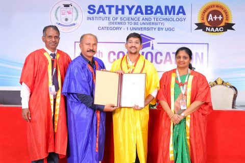
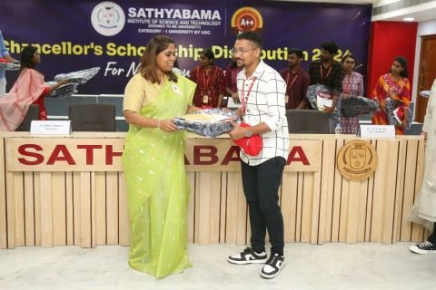
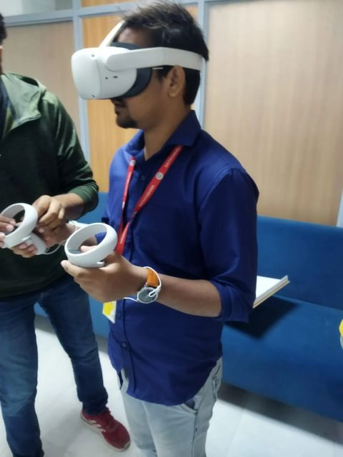

Learning Studio ↗
A learning workspace for Python, MySQL and Salesforce delivery, with executable foundation labs, a complete roadmap and project evidence.
Explore the project ↗Understand the system.
Build something useful.
I work with Salesforce and Azure DevOps, and explore software through projects, research and deliberate practice. This is a closer look at what I’m doing—and how I’m learning.
Python applications, product ideas and a learning workspace you can try for yourself.
See the selected projects ↗Live tools, academic projects and technical explorations. Open a project for the context, decisions and evidence behind it.
A learning workspace for Python, MySQL and Salesforce delivery, with executable foundation labs, a complete roadmap and project evidence.
Explore the project ↗An interactive way to reason about validation, credentials, approvals, deployment baselines and recovery before touching a live org.
Explore the project ↗A student relocation concept bringing accommodation, food and essential nearby services into one place.
Read the project overview ↗A desktop steganography project connecting a Tkinter interface, OpenCV image processing and password-related handling.
Read the project overview ↗A regression study moving from data cleaning and feature preparation to Random Forest modelling and evaluation.
Read the project overview ↗From structured ML study to engineering environments at Nokia and PwC. Each chapter adds a different perspective on how software gets built and supported.
Read the concise professional brief ↗2021–2025 · Gold medalist
Salesforce Developer training and administrative/support work in an existing Microsoft Azure DevOps environment.
Building practical familiarity with Salesforce and the tools around software delivery. Deeper CI/CD implementation is developed through personal study and experimentation.
An internship chapter preceding the transition to a full-time Associate role.
The progression from internship to Associate is the central milestone of this chapter. Specific client work and internal material are not included in this public portfolio.
Professional engineering exposure, including Python and Robot Framework automation and testing concepts.
An introduction to software-engineering practice in a professional environment. The date range is intentionally broad because the exact internship end month has not been confirmed.
Structured machine-learning study alongside a computer-science foundation.
A learning programme, distinct from employment. It forms part of the path into machine-learning projects and further technical exploration.
A tool list is more useful when it explains the setting. These are the areas I’m working in, practising and exploring.
Salesforce Developer training, plus administrative and support work in an existing Azure DevOps environment.
Professional context ↗Exploring problems through Python applications, data preparation, web interfaces and machine-learning projects.
See a Python project ↗Personal CI/CD learning, cloud and generative-AI interests, and campus AR/VR training using Unity and Vuforia.
Explore the delivery lab ↗A research thread connecting software delivery, access controls and the security of the systems around them.
View the publication ↗The paper explores layered security across web-application delivery, including code analysis, access controls, container protection and runtime monitoring.
Conference publication · 2025 8th International Conference on Circuit, Power & Computing Technologies. Research overview; individual author contributions are not specified here.
Academic recognition and learning experiences that form part of the journey.
Selected among the top ten students nationally.

ACADEMIC DISTINCTIONSathyabama Institute of Science and Technology.

CHANCELLOR’S MERIT SCHOLARSHIPRecognition for academic performance in the department.
2020–21 scholarship programme.

Campus AR/VR training introduced me to immersive interfaces and hands-on work with Unity and Vuforia.
Work is one part of the story. Learning, recognition and the people who helped along the way belong here too.
A small visual record of learning and milestones. Select any frame to view it.
Looking for a quick overview, a live project or the research? This guide answers from the professional information on this site.
A local portfolio guide, not a live conversation or an AI service. Questions stay in your browser.
Abhishek Kumar is a PwC Associate with a computer-science background. His professional experience includes Salesforce Developer training and Azure DevOps support. His personal projects explore software learning, release engineering, Python and machine learning. He is a Sathyabama gold medalist and an IEEE conference-paper coauthor.
Explore the experience ↗Let’s talk about software, Salesforce, automation or an interesting problem to work through.